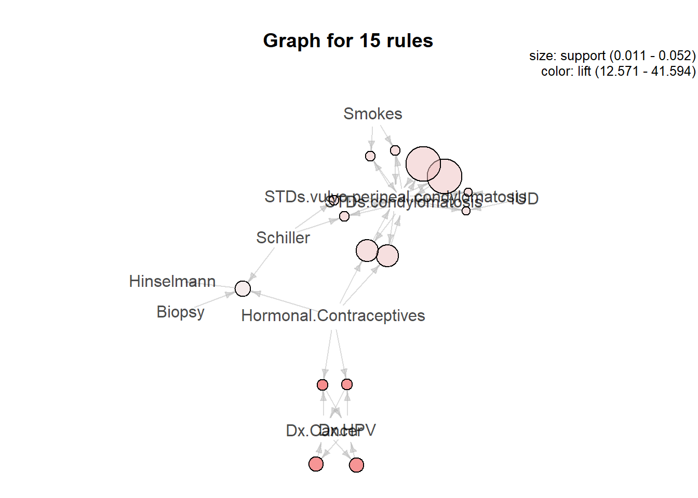
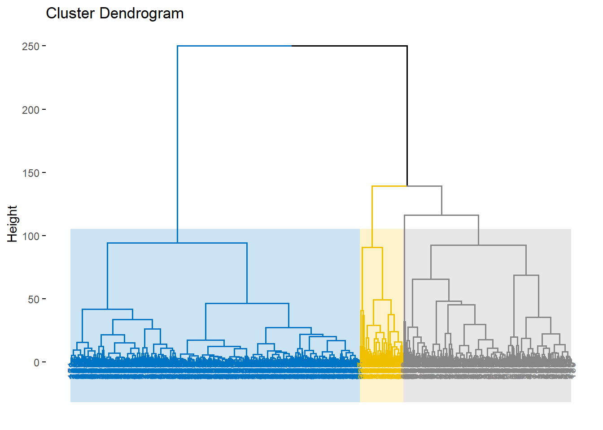

4.10 Unsupervised Machine Learning
2020-05-05
4.10.1 Clustering and Association Rules
Consider the the Cervical Cancer (Risk Factors) data set (available from UCI repository) and exploit the data using association rules (for binary variables) and clustering (for continuous variables).
Read data
library(tidyverse)
## read the data
dataset<-read.csv("2.UploadedData/risk_factors_cervical_cancer.csv",na.strings = c("NA","?",""))
# identified categorical variables
categorical<-c("Smokes", "Hormonal.Contraceptives", "IUD", # "STDs" not included beacause it is defined from the other STDs
"STDs.condylomatosis","STDs.cervical.condylomatosis",
"STDs.vulvo.perineal.condylomatosis", "STDs.syphilis",
"STDs.pelvic.inflammatory.disease",
"STDs.genital.herpes","STDs.molluscum.contagiosum",
"STDs.AIDS", "STDs.HIV", "STDs.Hepatitis.B", "STDs.HPV",
"Dx.Cancer", "Dx.CIN", "Dx.HPV", "Hinselmann", "Schiller", #, DX not included beacause it is defined from the other Dxs
"Citology", "Biopsy")
# # identified categorical variables
continuous<-c("Age","Number.of.sexual.partners","First.sexual.intercourse",
"Num.of.pregnancies","Smokes..years.","Smokes..packs.year.",
"Hormonal.Contraceptives..years.","IUD..years.", "STDs..number.",
"STDs..Number.of.diagnosis" #,"STDs..Time.since.first.diagnosis",
#"STDs..Time.since.last.diagnosis"
)4.10.1.1 Association rules
# selected only categorical features
datacat<-dataset %>% select(!!categorical)
# transforme as logical
# with this transformation we only consider positive events,
# i.e, 'Smokes' stands for 'Smokes = 1' and 'Dx.Cancer' stands for 'Dx.Cancer' and so on...
datacat<-as.data.frame(lapply(datacat, as.logical))
# filter only complete cases
datacat_complete<-datacat[complete.cases(datacat), ]
str(datacat_complete)## 'data.frame': 726 obs. of 21 variables:
## $ Smokes : logi FALSE FALSE FALSE TRUE FALSE FALSE ...
## $ Hormonal.Contraceptives : logi FALSE FALSE FALSE TRUE TRUE FALSE ...
## $ IUD : logi FALSE FALSE FALSE FALSE FALSE FALSE ...
## $ STDs.condylomatosis : logi FALSE FALSE FALSE FALSE FALSE FALSE ...
## $ STDs.cervical.condylomatosis : logi FALSE FALSE FALSE FALSE FALSE FALSE ...
## $ STDs.vulvo.perineal.condylomatosis: logi FALSE FALSE FALSE FALSE FALSE FALSE ...
## $ STDs.syphilis : logi FALSE FALSE FALSE FALSE FALSE FALSE ...
## $ STDs.pelvic.inflammatory.disease : logi FALSE FALSE FALSE FALSE FALSE FALSE ...
## $ STDs.genital.herpes : logi FALSE FALSE FALSE FALSE FALSE FALSE ...
## $ STDs.molluscum.contagiosum : logi FALSE FALSE FALSE FALSE FALSE FALSE ...
## $ STDs.AIDS : logi FALSE FALSE FALSE FALSE FALSE FALSE ...
## $ STDs.HIV : logi FALSE FALSE FALSE FALSE FALSE FALSE ...
## $ STDs.Hepatitis.B : logi FALSE FALSE FALSE FALSE FALSE FALSE ...
## $ STDs.HPV : logi FALSE FALSE FALSE FALSE FALSE FALSE ...
## $ Dx.Cancer : logi FALSE FALSE FALSE TRUE FALSE FALSE ...
## $ Dx.CIN : logi FALSE FALSE FALSE FALSE FALSE FALSE ...
## $ Dx.HPV : logi FALSE FALSE FALSE TRUE FALSE FALSE ...
## $ Hinselmann : logi FALSE FALSE FALSE FALSE FALSE FALSE ...
## $ Schiller : logi FALSE FALSE FALSE FALSE FALSE FALSE ...
## $ Citology : logi FALSE FALSE FALSE FALSE FALSE FALSE ...
## $ Biopsy : logi FALSE FALSE FALSE FALSE FALSE FALSE ...Coerce Item List to the Transactions class
## [1] "transactions"
## attr(,"package")
## [1] "arules"## transactions as itemMatrix in sparse format with
## 726 rows (elements/itemsets/transactions) and
## 19 columns (items) and a density of 0.07206032
##
## most frequent items:
## Hormonal.Contraceptives Smokes IUD
## 466 104 81
## Schiller Biopsy (Other)
## 69 50 224
##
## element (itemset/transaction) length distribution:
## sizes
## 0 1 2 3 4 5 6 7
## 164 342 113 47 32 15 9 4
##
## Min. 1st Qu. Median Mean 3rd Qu. Max.
## 0.000 1.000 1.000 1.369 2.000 7.000
##
## includes extended item information - examples:
## labels variables levels
## 1 Smokes Smokes TRUE
## 2 Hormonal.Contraceptives Hormonal.Contraceptives TRUE
## 3 IUD IUD TRUE
##
## includes extended transaction information - examples:
## transactionID
## 1 1
## 2 2
## 3 3## items transactionID
## [1] {} 1
## [2] {} 2
## [3] {} 3
## [4] {Smokes,Hormonal.Contraceptives,Dx.Cancer,Dx.HPV} 4
## [5] {Hormonal.Contraceptives} 5
## [6] {} 6
## [7] {Smokes,IUD,Hinselmann,Schiller,Biopsy} 7
## [8] {Hormonal.Contraceptives,IUD} 8
## [9] {Dx.Cancer,Dx.HPV} 9
## [10] {Hormonal.Contraceptives} 11plot more frequent events
applying Apriori
## Apriori
##
## Parameter specification:
## confidence minval smax arem aval originalSupport maxtime support minlen
## 0.1 0.1 1 none FALSE TRUE 5 0.01 1
## maxlen target ext
## 10 rules TRUE
##
## Algorithmic control:
## filter tree heap memopt load sort verbose
## 0.1 TRUE TRUE FALSE TRUE 2 TRUE
##
## Absolute minimum support count: 7
##
## set item appearances ...[0 item(s)] done [0.00s].
## set transactions ...[19 item(s), 726 transaction(s)] done [0.00s].
## sorting and recoding items ... [13 item(s)] done [0.00s].
## creating transaction tree ... done [0.00s].
## checking subsets of size 1 2 3 4 done [0.00s].
## writing ... [110 rule(s)] done [0.01s].
## creating S4 object ... done [0.00s].## set of 110 rules
##
## rule length distribution (lhs + rhs):sizes
## 1 2 3 4
## 3 45 54 8
##
## Min. 1st Qu. Median Mean 3rd Qu. Max.
## 1.000 2.000 3.000 2.609 3.000 4.000
##
## summary of quality measures:
## support confidence coverage lift
## Min. :0.01102 Min. :0.1111 Min. :0.01102 Min. : 0.8309
## 1st Qu.:0.01377 1st Qu.:0.2564 1st Qu.:0.02514 1st Qu.: 1.2595
## Median :0.01791 Median :0.6283 Median :0.05234 Median : 3.6341
## Mean :0.03168 Mean :0.5591 Mean :0.08620 Mean : 7.1996
## 3rd Qu.:0.03168 3rd Qu.:0.7681 3rd Qu.:0.06680 3rd Qu.:10.1200
## Max. :0.64187 Max. :1.0000 Max. :1.00000 Max. :41.5938
## count
## Min. : 8
## 1st Qu.: 10
## Median : 13
## Mean : 23
## 3rd Qu.: 23
## Max. :466
##
## mining info:
## data ntransactions support confidence
## datacat_complete 726 0.01 0.1see the first 10 resulted rules ordered by lift and support
## lhs rhs support confidence coverage lift count
## [1] {Hormonal.Contraceptives,
## Dx.Cancer} => {Dx.HPV} 0.01515152 0.9166667 0.01652893 41.59375 11
## [2] {Dx.HPV} => {Dx.Cancer} 0.02066116 0.9375000 0.02203857 40.03676 15
## [3] {Dx.Cancer} => {Dx.HPV} 0.02066116 0.8823529 0.02341598 40.03676 15
## [4] {Hormonal.Contraceptives,
## Dx.HPV} => {Dx.Cancer} 0.01515152 0.9166667 0.01652893 39.14706 11
## [5] {Smokes,
## STDs.condylomatosis} => {STDs.vulvo.perineal.condylomatosis} 0.01377410 1.0000000 0.01377410 19.10526 10
## [6] {STDs.condylomatosis,
## Schiller} => {STDs.vulvo.perineal.condylomatosis} 0.01377410 1.0000000 0.01377410 19.10526 10
## [7] {STDs.vulvo.perineal.condylomatosis} => {STDs.condylomatosis} 0.05234160 1.0000000 0.05234160 18.61538 38
## [8] {Hormonal.Contraceptives,
## STDs.vulvo.perineal.condylomatosis} => {STDs.condylomatosis} 0.03305785 1.0000000 0.03305785 18.61538 24
## [9] {Smokes,
## STDs.vulvo.perineal.condylomatosis} => {STDs.condylomatosis} 0.01377410 1.0000000 0.01377410 18.61538 10
## [10] {STDs.vulvo.perineal.condylomatosis,
## Schiller} => {STDs.condylomatosis} 0.01377410 1.0000000 0.01377410 18.61538 10see the first 10 resulted rules ordered by support and lift
## lhs rhs support confidence coverage lift count
## [1] {Biopsy} => {Schiller} 0.06060606 0.8800000 0.06887052 9.259130 44
## [2] {Schiller} => {Biopsy} 0.06060606 0.6376812 0.09504132 9.259130 44
## [3] {STDs.vulvo.perineal.condylomatosis} => {STDs.condylomatosis} 0.05234160 1.0000000 0.05234160 18.615385 38
## [4] {STDs.condylomatosis} => {STDs.vulvo.perineal.condylomatosis} 0.05234160 0.9743590 0.05371901 18.615385 38
## [5] {Schiller} => {Hinselmann} 0.04407713 0.4637681 0.09504132 10.202899 32
## [6] {Hinselmann} => {Schiller} 0.04407713 0.9696970 0.04545455 10.202899 32
## [7] {Hormonal.Contraceptives,
## Schiller} => {Biopsy} 0.03856749 0.6363636 0.06060606 9.240000 28
## [8] {Hormonal.Contraceptives,
## Biopsy} => {Schiller} 0.03856749 0.8484848 0.04545455 8.927536 28
## [9] {Hormonal.Contraceptives,
## STDs.vulvo.perineal.condylomatosis} => {STDs.condylomatosis} 0.03305785 1.0000000 0.03305785 18.615385 24
## [10] {Hormonal.Contraceptives,
## STDs.condylomatosis} => {STDs.vulvo.perineal.condylomatosis} 0.03305785 0.9600000 0.03443526 18.341053 24see the results for Dx.HPV and Dx.Cancer
## lhs rhs support confidence
## [1] {Dx.HPV} => {Dx.Cancer} 0.02066116 0.9375000
## [2] {Dx.Cancer} => {Dx.HPV} 0.02066116 0.8823529
## [3] {Hormonal.Contraceptives,Dx.HPV} => {Dx.Cancer} 0.01515152 0.9166667
## [4] {Hormonal.Contraceptives,Dx.Cancer} => {Dx.HPV} 0.01515152 0.9166667
## coverage lift count
## [1] 0.02203857 40.03676 15
## [2] 0.02341598 40.03676 15
## [3] 0.01652893 39.14706 11
## [4] 0.01652893 41.59375 11Visualize 15 results by lift and support values
graph

plot parallel coordenates

4.10.1.2 K-means
# selected only continuos features
datacont<-dataset %>% select(!!continuous)
# filter only complete cases
datacont_complete<-datacont[complete.cases(datacont), ]
str(datacont_complete)## 'data.frame': 668 obs. of 10 variables:
## $ Age : int 18 15 52 46 42 51 26 45 44 27 ...
## $ Number.of.sexual.partners : num 4 1 5 3 3 3 1 1 3 1 ...
## $ First.sexual.intercourse : num 15 14 16 21 23 17 26 20 26 17 ...
## $ Num.of.pregnancies : num 1 1 4 4 2 6 3 5 4 3 ...
## $ Smokes..years. : num 0 0 37 0 0 34 0 0 0 0 ...
## $ Smokes..packs.year. : num 0 0 37 0 0 3.4 0 0 0 0 ...
## $ Hormonal.Contraceptives..years.: num 0 0 3 15 0 0 2 0 2 8 ...
## $ IUD..years. : num 0 0 0 0 0 7 7 0 0 0 ...
## $ STDs..number. : num 0 0 0 0 0 0 0 0 0 0 ...
## $ STDs..Number.of.diagnosis : int 0 0 0 0 0 0 0 0 0 0 ...Determine number of clusters
within groups sum of squares
wss <- (nrow(datacont_complete)-1)*sum(apply(datacont_complete,2,var))
for (i in 2:15) wss[i] <- sum(kmeans(datacont_complete,
centers=i)$withinss)A plot of the within groups sum of squares by number of clusters extracted
plot(1:15, wss, type="b", xlab="Number of Clusters",
ylab="Within groups sum of squares")
abline(v = 3, col="red", lwd=1.5, lty=2)
K-Means Cluster Analysis
compactness of the clustering (between_SS / total_SS)
## [1] 48.70424get cluster means
## Group.1 Age Number.of.sexual.partners First.sexual.intercourse
## 1 1 42.66667 2.655172 18.47126
## 2 2 20.28797 2.351266 16.00949
## 3 3 30.52830 2.686792 18.05660
## Num.of.pregnancies Smokes..years. Smokes..packs.year.
## 1 3.770115 3.856712 1.5365104
## 2 1.642405 0.570680 0.2395741
## 3 2.660377 1.167777 0.3667880
## Hormonal.Contraceptives..years. IUD..years. STDs..number.
## 1 5.645402 1.3188506 0.2183908
## 2 1.156772 0.1170886 0.1740506
## 3 2.539828 0.7634717 0.1396226
## STDs..Number.of.diagnosis
## 1 0.11494253
## 2 0.09177215
## 3 0.08679245plot clusters for
visualize clusters
library(factoextra)
fviz_cluster(fit3, data = datacont_complete,
palette = "jco",
ggtheme = theme_minimal(),
main = "Partitioning Clustering Plot"
)Compute hierarchical k-means clustering
## [1] "cluster" "centers" "totss" "withinss" "tot.withinss"
## [6] "betweenss" "size" "iter" "ifault" "data"
## [11] "hclust"Visualize the tree

alternative hierarchical clustering
res.hc <- hclust(dist(datacont_complete), method = "ward.D2")
# plot the dendogram
fviz_dend(res.hc, cex = 0.5, k = 3, palette = "jco") 
References
http://www.rdatamining.com/examples/association-rules https://blog.aptitive.com/building-the-transactions-class-for-association-rule-mining-in-r-using-arules-and-apriori-c6be64268bc4 https://rpubs.com/lingyanzhou/examples-association-rules
https://www.statmethods.net/advstats/cluster.html https://towardsdatascience.com/clustering-analysis-in-r-using-k-means-73eca4fb7967 https://rpubs.com/JanpuHou/278558